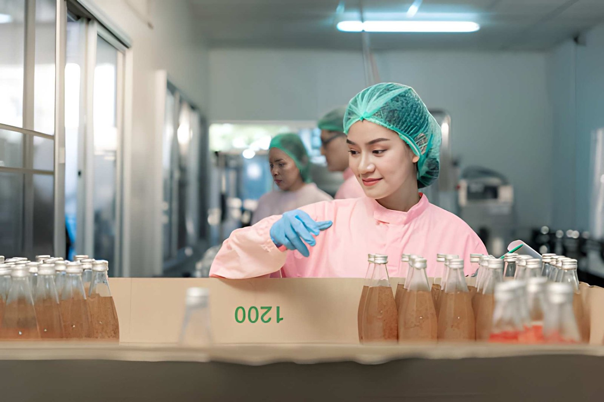

Primero de Mayo
Primero de Mayo
Primero de Mayo
Primero de Mayo
Primero de Mayo
Primero de Mayo
Formación integral, infraestructura adecuada y una oferta académica diseñada para el desarrollo


Revisa el pensum de estudios completo →
| Total periodos pedagógicos tronco común | 1ro | 2do | 3ro | |
|---|---|---|---|---|
| 19 | 19 | 19 | ||
| Módulos Genéricos de la Familia Profesional | Seguridad Industrial | 2 | 2 | |
| Procesos Industriales Sostenibles | 2 | 2 | ||
| Dibujo Técnico Aplicado | 2 | |||
| Módulos Especialización | Nutrientes de los alimentos | 4 | ||
| Métodos de conservación | 4 | |||
| Gestión de calidad y seguridad alimentaria | 4 | 2 | ||
| Procesamiento de cárnicos | 4 | 6 | ||
| Procesamiento de lácteos | 4 | 6 | ||
| Procesamiento de frutas y verduras | 4 | 6 | ||
| Módulo práctico/experimental | 3 | 3 | 3 | |
| Total de periodos pedagógicos de formación técnica | 21 | 21 | 21 | |

Emprendedora
Antes desperdiciaba mucha comida porque no sabía cómo guardarla bien, pero ahora todo me dura fresco

Emprendedora
Antes desperdiciaba mucha comida porque no sabía cómo guardarla bien, pero ahora todo me dura fresco

Emprendedora
Antes desperdiciaba mucha comida porque no sabía cómo guardarla bien, pero ahora todo me dura fresco

Emprendedora
Antes desperdiciaba mucha comida porque no sabía cómo guardarla bien, pero ahora todo me dura fresco

Profesional técnico o ingeniero (tecnólogo de alimentos) enfocado en garantizar la seguridad, calidad, inocuidad y vida útil de los productos.
Empieza hoy!